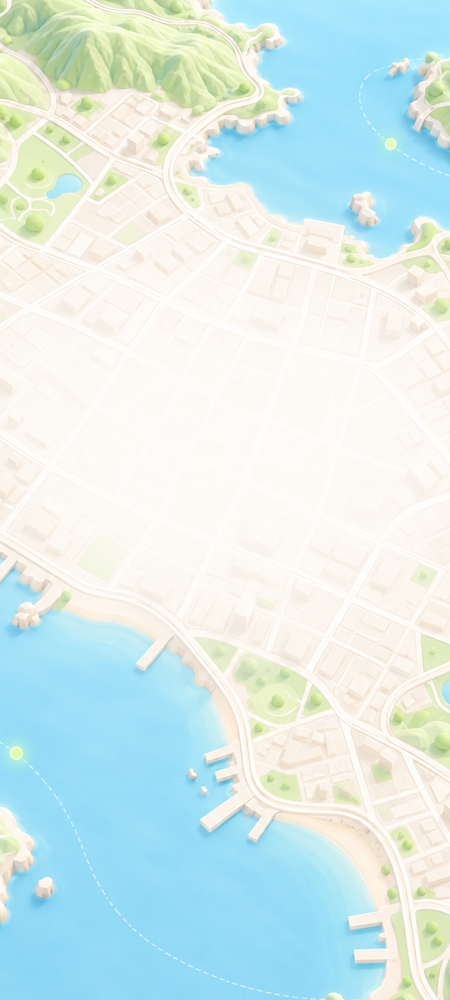

Shanghai
·
14 online
Suzhou
·
Unexplored
Nantong
·
Unexplored
Hangzhou
·
Unexplored
Jiaxing
·
Unexplored
!
Shanghai Market Square
·
3 online
Hongkou Tackle Shop
·
5 online
Lotus Tea House
·
4 online
Shanghai Travel Post
·
2 online
×5
Tea House ×5
·
12 online
Tap to list
◆
Willow Pond
Beginner pond · 1.2 km
Reed Pond
Beginner pond · 3.4 km
Homestead
Your farm
Mira
Kai
Bag
Nearby Cities
142
/200
+1 in
2:41
230
3
Today
·
Deliver 4 Fine fish · Shanghai Market Square
Shanghai
·
Homestead
safe top 120
safe bottom 100
bar bottom · 124 from bottom
HUD row 1 · 48–176
HUD row 2 · 192–256